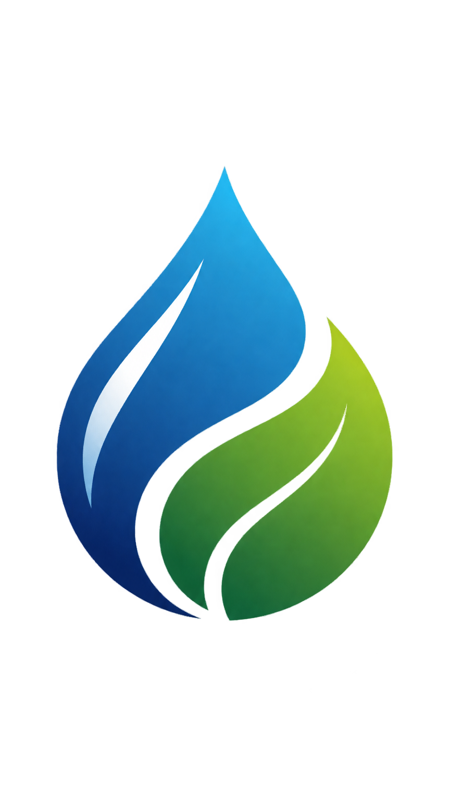

LaGOS Skydrive: Alpha 1
📟
Laegna Mathematical Operating System — first interactive alpha.
DataLib is a separate development sandbox for trying number types, screens, and keyboards before connecting them to the main OS. Its page also provides a standalone unit-test runner.